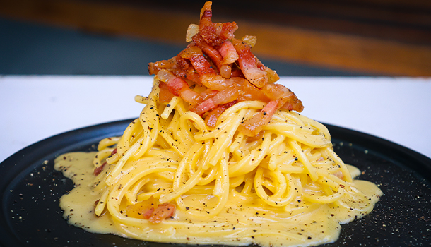

Carbonara

Description
Spaghetti alla carbonara is a traditional Italian recipe and every time you make this dish, it gets better and better. Crispy, tender in the middle, guanciale is mixed with spaghetti and a homemade peppery, pecorino-filled carbonara sauce. Moreover, my original recipe has become very popular across the globe as we try to set the record straight: NO CREAM! This is my 2021 version.
INGREDIENTS (1x)
- 300 grams Spaghetti quadrati 10.5oz
- 200 grams Pecorino Romano cheese
- 300 grams Guanciale 10.5oz
- 4 eggs 3 egg yolks + 1 entire egg
- Black pepper
INSTRUCTIONS
- Start by removing the skin of the guanciale – not the fat, just the skin. (I really hope you can find the guanciale because it makes the dish sing!)
- While you are cutting the pork, bring 5L of water to a boil. No need for salt in this recipe! The pecorino cheese is salty enough.
- Cut the guanciale into large strips then smaller ones all with fat on each side and delicious meat in the middle. When it cooks, it will be crispy on the outside and nice and tender on the inside.
- Add the pasta into the boiling water (NOTE: No salt!) and lightly push it down for the first 30 seconds to cook the pasta evenly.
- Next, put your guanciale into a large pan on medium-low heat, continuously stirring, so it doesn't burn.
- It’s time to make the sauce, so grab your eggs and get cracking! Make sure to separate the egg whites and yolks from 3 eggs – keeping the yolks in the large mixing bowl.
- Whisk your eggs until they are mixed and light. Once you have done this, don’t forget to collect a mug of pasta water for extra creamy spaghetti alla carbonara.
- Only add ½ of the pecorino cheese into the eggs with a splash of reserved pasta water, then mix. Once the cheese mixture is combined, add in the rest of the pecorino, and continue whisking until you get the perfect, thick carbonara sauce.
- Take half of the crispy guanciale out of the pan and set it aside.
- Using a set of tongs, transfer your al dente pasta from the pot right into the pan with guanciale. It's okay if some water comes with it; it will help make the sauce creamier later.
- Stir, stir, stir! Then add a splash of pasta water; this helps make sure the egg does not cook into scrambled eggs. Continue stirring for a few minutes.
- Remove the pan from medium heat and add your carbonara mixture to the hot pasta with another splash of pasta water. Continue stirring until you get a super creamy spaghetti carbonara.
- You don’t want to miss out on any of this sauce – add your pasta back into the large mixing bowl and stir until all the egg mixture is covering the pasta. MM-MM!
- Add a large amount of black pepper onto the spaghetti alla carbonara, stir, then add even more and stir again.
- The finally and most important step is tossing the spaghetti in the large bowl; this helps make it even creamier.
- E ora si mangia, Vincenzo’s Plate….Enjoy!